Asahikawa
Asahikawa · Hokkaido
Asahikawa
Highlighted on the Hokkaido map.
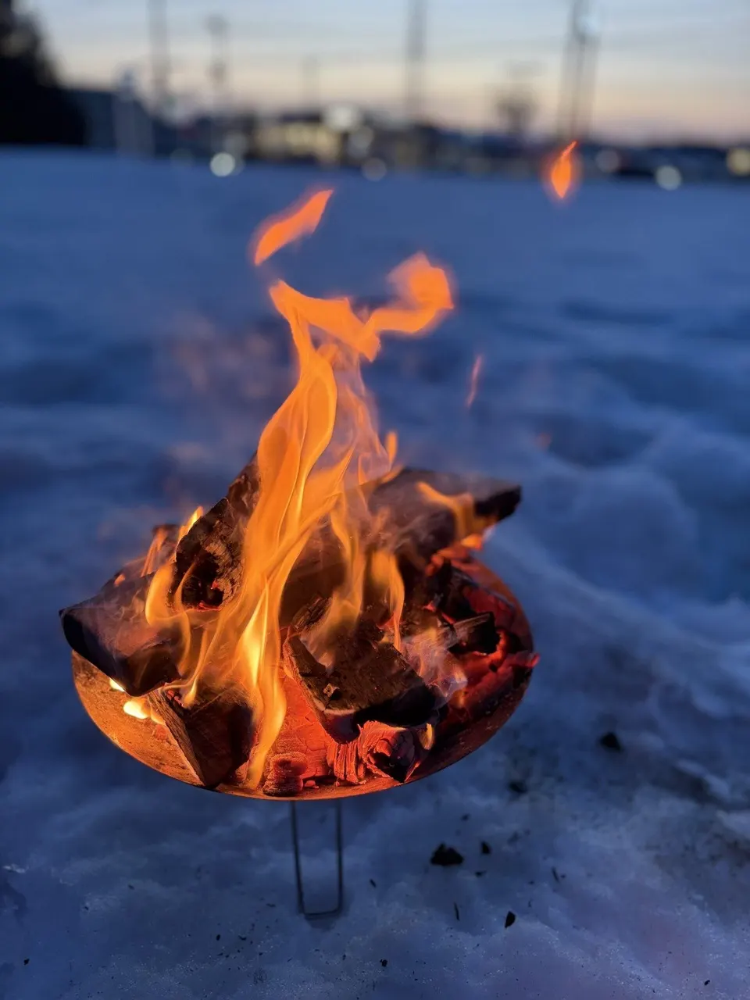
Stay
OMO7旭川 by 星野リゾート
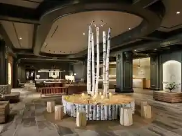
Omo7 Asahikawa By Hoshino Rizooto
Hotel G.G.G. Asahikawa
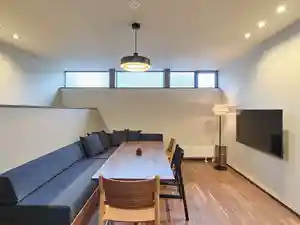
Hotel G . G . G . Asahikawa
ホテルクレッセント旭川
Hoterukuressento Asahikawa
旭川トーヨーホテル
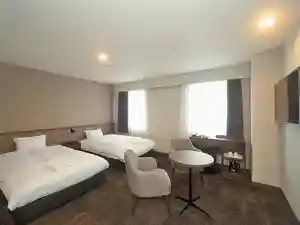
Asahikawa Tooyoohoteru
くれたけイン旭川
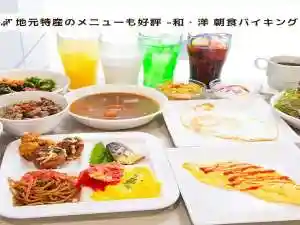
Kuretake In Asahikawa
アートホテル旭川
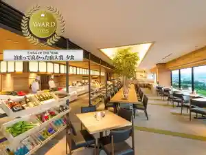
Aatohoteru Asahikawa
天然温泉神威の湯 ドーミーイン旭川
Tennen Onsen Kamoi No Yu Doomiiin Asahikawa
Rホテルズイン北海道旭川
R Hoteruzuin Hokkaidou Asahikawa
TKDHOUSE旭川
Tkdhouse Asahikawa
旭川サンホテル
Asahikawa Sanhoteru
ホテルテトラ旭川駅前
Hoterutetora Asahikawaeki Mae
Tabist ダイバーシティホテル シン トキワ 旭川
Tabist Daibaashiteihoteru Shin Tokiwa Asahikawa
Dining
別家
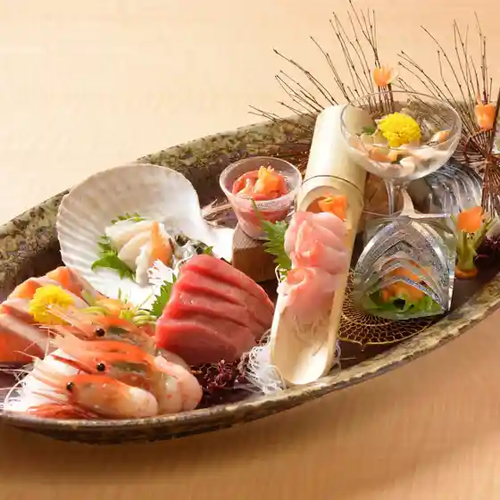
Bekke
北海道さかな一途 直営魚問屋
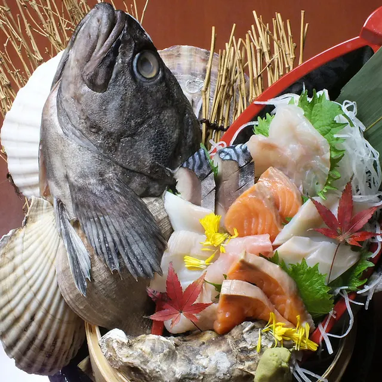
Hokkaidou Sakana Ichizu Chokuei Sakana Tonya
旭川ジンギスカンと北海道和牛 肉ビストロ ユキトニクト
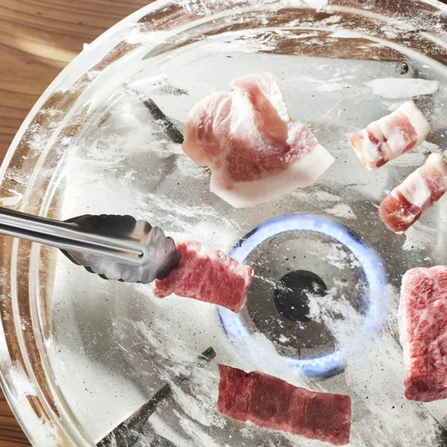
Asahikawa Jingisukan To Hokkaidou Wagyuu Niku Bisutoro Yukitonikuto
炭焼あぶりや 一期一会
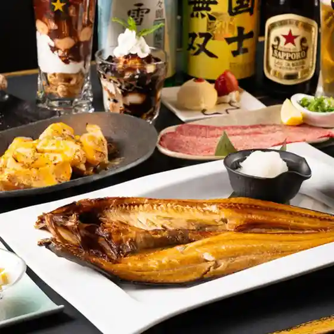
Sumiyaki Aburiya Ichigoichie
おいしい美術館eight
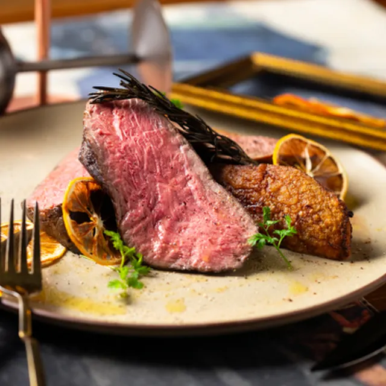
Oishii Bijutsukan Eight
我家
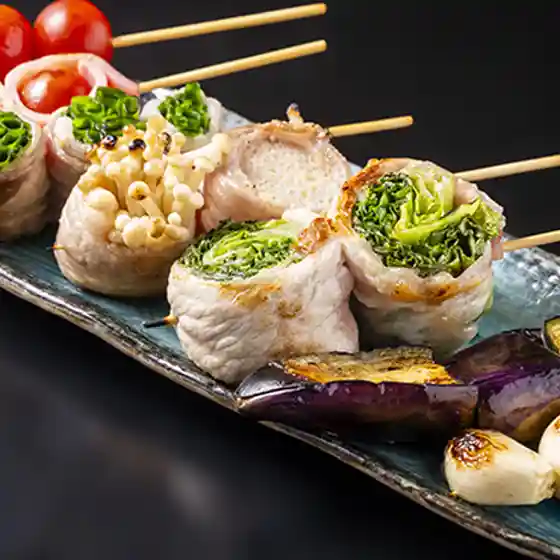
Wagaya
旭川 居酒屋 ふくろう亭
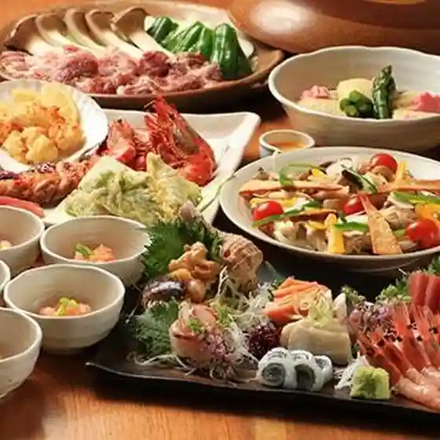
Asahikawa Izakaya Fukurou Tei
四季彩 別邸 旭川店
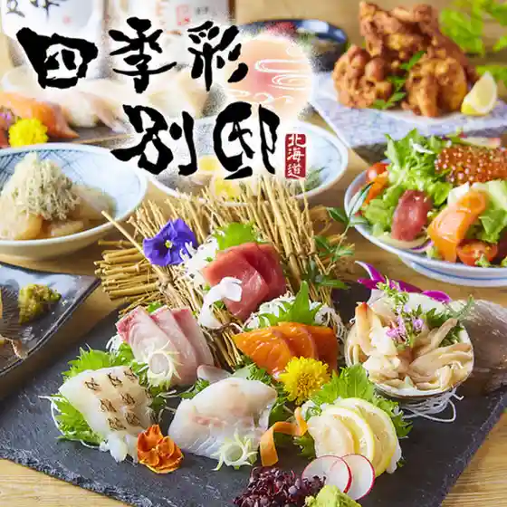
Shiki Sai Bettei Asahikawa Mise
炉端と地酒 まる文 すが原
Robata To Jizake Maru Bun Suga Hara
北の富士本店 櫻屋
Kita No Fujimoto Mise Sakura Ya
溶岩焼ジンギスカン たまり
Yougan Yaki Jingisukan Tamari
創作和風 個室居酒屋 萬屋 旭川店
Sousaku Wafuu Koshitsu Izakaya Yorozuya Asahikawa Mise
北の酔り処
Kita No Sui Ri Tokoro
髭 北海道居酒屋 酔い処
Hige Hokkaidou Izakaya Yoi Tokoro
山の猿 買物公園通り店
Yama No Saru Kaimono Kouen Touri Mise
焼肉 わじま
Yakiniku Wajima
居酒屋 かつぎ屋
Izakaya Katsugi Ya
Cafe ジビエ工業
Cafe Jibie Kougyou
たま 買物公園通り店
Tama Kaimono Kouen Touri Mise
炭火居酒屋 炎 旭川買物公園通店
Sumibi Izakaya Honoo Asahikawa Kaimono Kouen Toori Mise
居酒屋 紅あかり
Izakaya Kurenai Akari
七輪焼肉 安安 旭川川端店
Shichirin Yakiniku An An Asahikawa Kawabata Mise
蝦夷前やきとりism
Ezo Mae Yakitori Ism
鰻・旬魚旬菜 柳光亭
Unagi Shungyo Jun Na Yanagi Hikari Tei
Sights
Abankyanpu GOKKAN
Abankyanpu GOKKAN